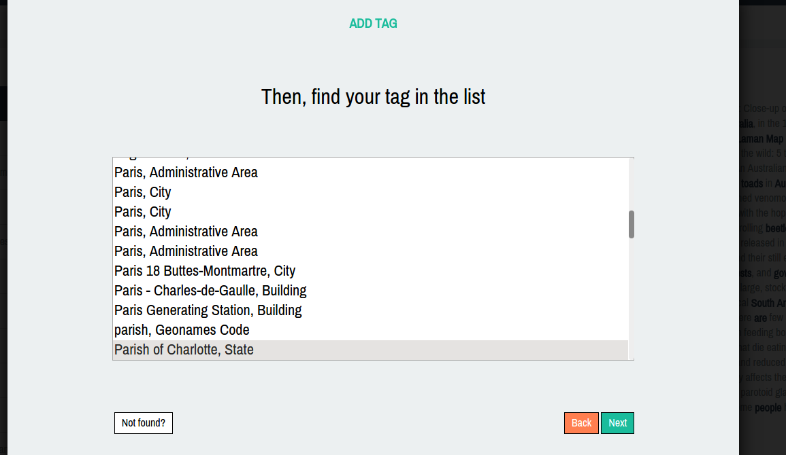
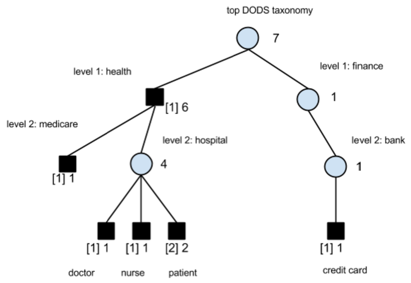
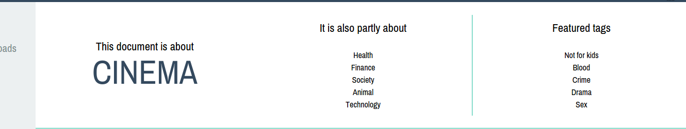

CAM UI
Past, present and future
A presentation by Alessandro Menduni
Before / after
Some additions to the old UI worth focusing on:
- Document readability
- Progress tracking
- Dashboard
- Live filters
Persistence
Will open up to new possibilities:
- Resume suspended activities
- Long-term statistics
Smart disambiguation
Why delegating it to the user?

Cluster-based aboutness assessment

Cluster-based aboutness assessment
